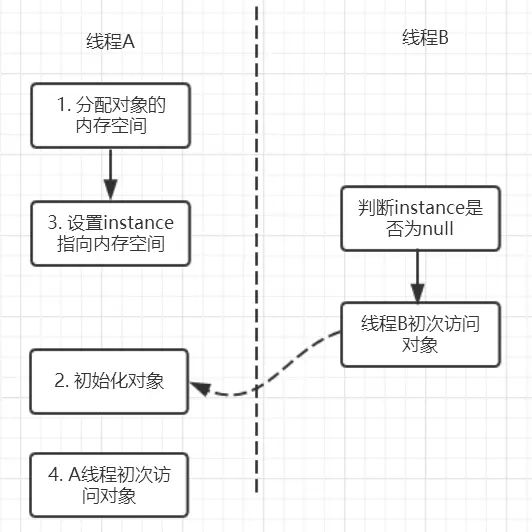

本人免费整理了Java高级资料，涵盖了Java、Redis、MongoDB、MySQL、Zookeeper、Spring Cloud、Dubbo高并发分布式等教程，一共30G，需要自己领取。
传送门：https://mp.weixin.qq.com/s/JzddfH-7yNudmkjT0IRL8Q
1. 三大性质简介
在并发编程中分析线程安全的问题时往往需要切入点，那就是两大核心：JMM抽象内存模型以及happens-before规则Java内存模型以及happens-before规则，三条性质：原子性，有序性和可见性。关于synchronized和volatile已经讨论过了，就想着将并发编程中这两大神器在 原子性，有序性和可见性上做一个比较，当然这也是面试中的高频考点，值得注意。
2. 原子性
原子性是指一个操作是不可中断的，要么全部执行成功要么全部执行失败，有着“同生共死”的感觉。及时在多个线程一起执行的时候，一个操作一旦开始，就不会被其他线程所干扰。我们先来看看哪些是原子操作，哪些不是原子操作，有一个直观的印象：
int a = 10; //1
a++; //2
int b=a; //3
a = a+1; //4
上面这四个语句中只有第1个语句是原子操作，将10赋值给线程工作内存的变量a,而语句2（a++），实际上包含了三个操作：1. 读取变量a的值；2：对a进行加一的操作；3.将计算后的值再赋值给变量a，而这三个操作无法构成原子操作。对语句3,4的分析同理可得这两条语句不具备原子性。当然，java内存模型中定义了8中操作都是原子的，不可再分的。
上面的这些指令操作是相当底层的，可以作为扩展知识面掌握下。那么如何理解这些指令了?比如，把一个变量从主内存中复制到工作内存中就需要执行read,load操作，将工作内存同步到主内存中就需要执行store,write操作。
注意的是：java内存模型只是要求上述两个操作是顺序执行的并不是连续执行的。也就是说read和load之间可以插入其他指令，store和writer可以插入其他指令。比如对主内存中的a,b进行访问就可以出现这样的操作顺序：read a,read b, load b,load a。
由原子性变量操作read,load,use,assign,store,write，可以大致认为基本数据类型的访问读写具备原子性（例外就是long和double的非原子性协定）
synchronized
上面一共有八条原子操作，其中六条可以满足基本数据类型的访问读写具备原子性，还剩下lock和unlock两条原子操作。如果我们需要更大范围的原子性操作就可以使用lock和unlock原子操作。
尽管jvm没有把lock和unlock开放给我们使用，但jvm以更高层次的指令monitorenter和monitorexit指令开放给我们使用，反应到java代码中就是---synchronized关键字，也就是说synchronized满足原子性。
volatile 我们先来看这样一个例子：
public class VolatileExample {
private static volatile int counter = 0;
public static void main(String[] args) {
for (int i = 0; i < 10; i++) {
Thread thread = new Thread(new Runnable() {
@Override
public void run() {
for (int i = 0; i < 10000; i++)
counter++;
}
});
thread.start();
}
try {
Thread.sleep(1000);
} catch (InterruptedException e) {
e.printStackTrace();
}
System.out.println(counter);
}
}
开启10个线程，每个线程都自加10000次，如果不出现线程安全的问题最终的结果应该就是：10*10000 = 100000;可是运行多次都是小于100000的结果，问题在于 volatile并不能保证原子性，在前面说过counter++这并不是一个原子操作，包含了三个步骤：
1.读取变量counter的值；
2.对counter加一；
3.将新值赋值给变量counter。
如果线程A读取counter到工作内存后，其他线程对这个值已经做了自增操作后，那么线程A的这个值自然而然就是一个过期的值，因此，总结果必然会是小于100000的。
如果让volatile保证原子性，必须符合以下两条规则：
3. 有序性
synchronized
synchronized语义表示锁在同一时刻只能由一个线程进行获取，当锁被占用后，其他线程只能等待。因此，synchronized语义就要求线程在访问读写共享变量时只能“串行”执行，因此synchronized具有有序性。
volatile
在java内存模型中说过，为了性能优化，编译器和处理器会进行指令重排序；也就是说java程序天然的有序性可以总结为：如果在本线程内观察，所有的操作都是有序的；如果在一个线程观察另一个线程，所有的操作都是无序的。在单例模式的实现上有一种双重检验锁定的方式（Double-checked Locking）。
代码如下：
public class Singleton {
private Singleton() { }
private volatile static Singleton instance;
public Singleton getInstance(){
if(instance==null){
synchronized (Singleton.class){
if(instance==null){
instance = new Singleton();
}
}
}
return instance;
}
}
这里为什么要加volatile了？我们先来分析一下不加volatile的情况，有问题的语句是这条：
instance = new Singleton();
这条语句实际上包含了三个操作：
1.分配对象的内存空间；
2.初始化对象；
3.设置instance指向刚分配的内存地址。
但由于存在重排序的问题，可能有以下的执行顺序：

如果2和3进行了重排序的话，线程B进行判断if(instance==null)时就会为true，而实际上这个instance并没有初始化成功，显而易见对线程B来说之后的操作就会是错得。
而用volatile修饰的话就可以禁止2和3操作重排序，从而避免这种情况。
volatile包含禁止指令重排序的语义，其具有有序性。
4. 可见性
可见性是指当一个线程修改了共享变量后，其他线程能够立即得知这个修改。通过之前对内存synchronzed语义进行了分析，当线程获取锁时会从主内存中获取共享变量的最新值，释放锁的时候会将共享变量同步到主内存中。
从而，synchronized具有可见性。同样的在volatile分析中，会通过在指令中添加lock指令，以实现内存可见性。因此, volatile具有可见性
5. 总结
通过这篇文章，主要是比较了synchronized和volatile在三条性质：原子性，可见性，以及有序性的情况，
归纳如下：
synchronized: 具有原子性，有序性和可见性； volatile：具有有序性和可见性